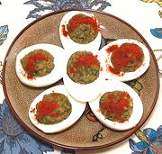

|
Egg Salad / Stuffed EggsGeorgia - Abkhazia - Azelila | ||||
| Makes: Effort: Sched: DoAhead: |
16 app ** 1-1/4 hrs Yes |
The pattern recipe serves this salad as mound of egg yolk mix surrounded by coarsely chopped whites. I have chosen to surround the yolks with whites in a way more convenient for party service. | |||
|
8 2 1/2 4 2/3 3 2 ----- |
lrg T c T t T t --- |
Eggs Butter Walnut meats Dill, fresh Salt Ajika (1) Lemon Juice -- Garnish Paprika |
Many recent recipes just chop the whites small and mix them with the yolks for a spread or filling. Make - (1-1/4 hrs - 23 min work)
|